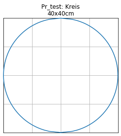

Examples for general profile shapes¶
[1]:
from shape_generator import Profile, circle, csv
[2]:
profile_dimensions = csv("""
nr,name,r
P0,0,300
P1,1,350
P2,2,400
P3,3,450
P4,4,500
P5,5,550
P6,6,600
P7,6a,650
""")
profile_dimensions
[2]:
| name | r | |
|---|---|---|
| nr | ||
| P0 | 0 | 300 |
| P1 | 1 | 350 |
| P2 | 2 | 400 |
| P3 | 3 | 450 |
| P4 | 4 | 500 |
| P5 | 5 | 550 |
| P6 | 6 | 600 |
| P7 | 6a | 650 |
[3]:
no = 'P0'
name, r = profile_dimensions.loc[no].values
R = 3 * r
roh = r / 2
height = r * 3
width = r * 2
# h1 = roh - (r + roh) / (R - roh) * roh
h1 = 0.2 * r
cross_section = Profile(number=no, name=name, width=width, height=height)
cross_section.add(circle(roh, x_m=roh))
cross_section.add(h1)
cross_section.add(circle(R, x_m=2 * r, y_m=-(R - r)))
cross_section.add(2 * r)
cross_section.add(circle(r, x_m=2 * r))
______________________________
Pr_P0 -> 0
[4]:
cross_section.generator(show=True)
0 : sqrt(-(x - 150.0)**2 + 22500.0)
1 : (60.0, None)
2 : sqrt(-(x - 600.0)**2 + 810000.0) - 600.0
3 : (600.0, None)
4 : sqrt(-(x - 600.0)**2 + 90000.0)
x y
0 0 0
1 10 53.8516
2 20 74.8331
3 30 90
4 40 101.98
5 50 111.803
6 60 120
7 69.4737 127.009
8 78.9474 133.828
9 88.4211 140.464
10 97.8947 146.921
11 107.368 153.202
12 116.842 159.314
13 126.316 165.26
14 135.789 171.044
15 145.263 176.669
16 154.737 182.139
17 164.211 187.457
18 173.684 192.625
19 183.158 197.648
20 192.632 202.528
21 202.105 207.267
22 211.579 211.868
23 221.053 216.333
24 230.526 220.664
25 240 224.864
26 249.474 228.934
27 258.947 232.876
28 268.421 236.693
29 277.895 240.386
.. ... ...
67 628.125 298.679
68 637.5 297.647
69 646.875 296.315
70 656.25 294.679
71 665.625 292.734
72 675 290.474
73 684.375 287.89
74 693.75 284.975
75 703.125 281.718
76 712.5 278.107
77 721.875 274.129
78 731.25 269.766
79 740.625 264.999
80 750 259.808
81 759.375 254.165
82 768.75 248.039
83 778.125 241.395
84 787.5 234.187
85 796.875 226.363
86 806.25 217.855
87 815.625 208.581
88 825 198.431
89 834.375 187.265
90 843.75 174.888
91 853.125 161.021
92 862.5 145.237
93 871.875 126.823
94 881.25 104.396
95 890.625 74.4118
96 900 0
[97 rows x 2 columns]
[5]:
cross_section.df_abs
[5]:
| x | y | |
|---|---|---|
| 0 | 0.00 | 0.00 |
| 1 | 9.99 | 53.82 |
| 2 | 19.98 | 74.79 |
| 3 | 29.97 | 90.00 |
| 4 | 39.96 | 101.97 |
| 5 | 50.04 | 111.78 |
| 6 | 60.03 | 119.97 |
| 7 | 69.48 | 126.99 |
| 8 | 78.93 | 133.83 |
| 9 | 88.38 | 140.49 |
| 10 | 97.92 | 146.88 |
| 11 | 107.37 | 153.18 |
| 12 | 116.82 | 159.30 |
| 13 | 126.36 | 165.24 |
| 14 | 135.81 | 171.00 |
| 15 | 145.26 | 176.67 |
| 16 | 154.71 | 182.16 |
| 17 | 164.25 | 187.47 |
| 18 | 173.70 | 192.60 |
| 19 | 183.15 | 197.64 |
| 20 | 192.60 | 202.50 |
| 21 | 202.14 | 207.27 |
| 22 | 211.59 | 211.86 |
| 23 | 221.04 | 216.36 |
| 24 | 230.49 | 220.68 |
| 25 | 240.03 | 224.82 |
| 26 | 249.48 | 228.96 |
| 27 | 258.93 | 232.92 |
| 28 | 268.38 | 236.70 |
| 29 | 277.92 | 240.39 |
| ... | ... | ... |
| 67 | 628.11 | 298.71 |
| 68 | 637.47 | 297.63 |
| 69 | 646.92 | 296.28 |
| 70 | 656.28 | 294.66 |
| 71 | 665.64 | 292.77 |
| 72 | 675.00 | 290.43 |
| 73 | 684.36 | 287.91 |
| 74 | 693.72 | 284.94 |
| 75 | 703.08 | 281.70 |
| 76 | 712.53 | 278.10 |
| 77 | 721.89 | 274.14 |
| 78 | 731.25 | 269.73 |
| 79 | 740.61 | 264.96 |
| 80 | 749.97 | 259.83 |
| 81 | 759.42 | 254.16 |
| 82 | 768.78 | 248.04 |
| 83 | 778.14 | 241.38 |
| 84 | 787.50 | 234.18 |
| 85 | 796.86 | 226.35 |
| 86 | 806.22 | 217.89 |
| 87 | 815.58 | 208.62 |
| 88 | 825.03 | 198.45 |
| 89 | 834.39 | 187.29 |
| 90 | 843.75 | 174.87 |
| 91 | 853.11 | 161.01 |
| 92 | 862.47 | 145.26 |
| 93 | 871.92 | 126.81 |
| 94 | 881.28 | 104.40 |
| 95 | 890.64 | 74.43 |
| 96 | 900.00 | 0.00 |
96 rows × 2 columns
[6]:
fig = cross_section.profile_abs_figure()

[7]:
no = 'test'
name = 'Kreis'
r = 200
kreis = Profile(number=no, name=name, height=2*r)
kreis.add_and_show(circle(r, x_m=r))
______________________________
Pr_test -> Kreis
[sqrt(-(x - 200.0)**2 + 40000.0)]

[8]:
kreis.add_and_show(r,r)
[sqrt(-(x - 200.0)**2 + 40000.0), (200.0, 200.0)]

[9]:
kreis.add_and_show(r*2,r)
[sqrt(-(x - 200.0)**2 + 40000.0), (200.0, 200.0), (400.0, 200.0)]